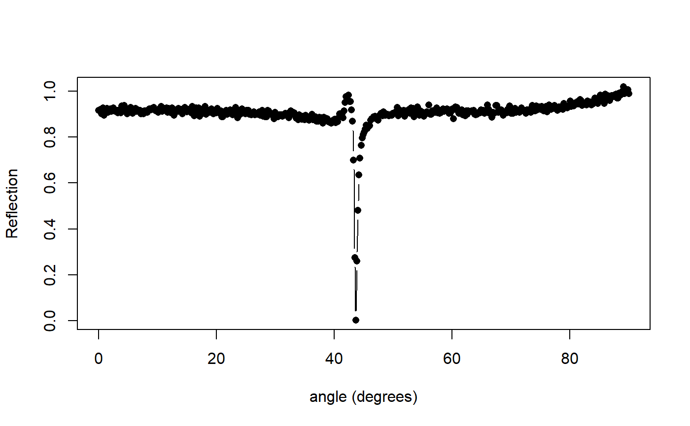
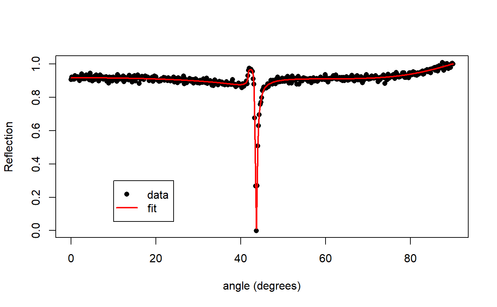

Vignettes to show how to fit.
library(mlfilms)
my_layers <- list(index = 0.13 + 4i,
thickness = 45e-9)
my_plasmon <- angle_scan(my_layers, incident_medium.index = 1.5+0i)
my_plasmon$Reflection <- my_plasmon$Reflection + rnorm(500,,0.01)
plot(x = my_plasmon$angle,
y = my_plasmon$Reflection,
type = 'b', xlab = "angle (degrees)", ylab = "Reflection", pch = 16)
my_fit_function <- function(x){
layers <- list(index = x[1] + x[2]*1i,
thickness = x[3]*1e-9)
result <- angle_scan(layers, incident_medium.index = 1.5 + 0i)
return(mean((my_plasmon$Reflection - result$Reflection)^2))
}guess <- optim(par = c(runif(1,0,2), runif(1,1,7.5), runif(1,10,100)),
fn = my_fit_function)
print(guess)
#> $par
#> [1] 0.1308355 4.0001813 44.9321498
#>
#> $value
#> [1] 9.59423e-05
#>
#> $counts
#> function gradient
#> 162 NA
#>
#> $convergence
#> [1] 0
#>
#> $message
#> NULLguess_layers <- list(index = guess$par[1] + guess$par[2]*1i,
thickness = guess$par[3]*1e-9)
guess_plasmon <- angle_scan(guess_layers,incident_medium.index = 1.5+0i)plot(x = my_plasmon$angle,
y = my_plasmon$Reflection,
xlab = "angle (degrees)", ylab = "Reflection", pch = 16)
lines(x = my_plasmon$angle,
y = guess_plasmon$Reflection,
col = 'red', lwd = 2)
legend(10,0.3,
legend = c("data", "fit"),
pch = c(16,NA), lty = c(NA,1), lwd = 2, col = 1:2)